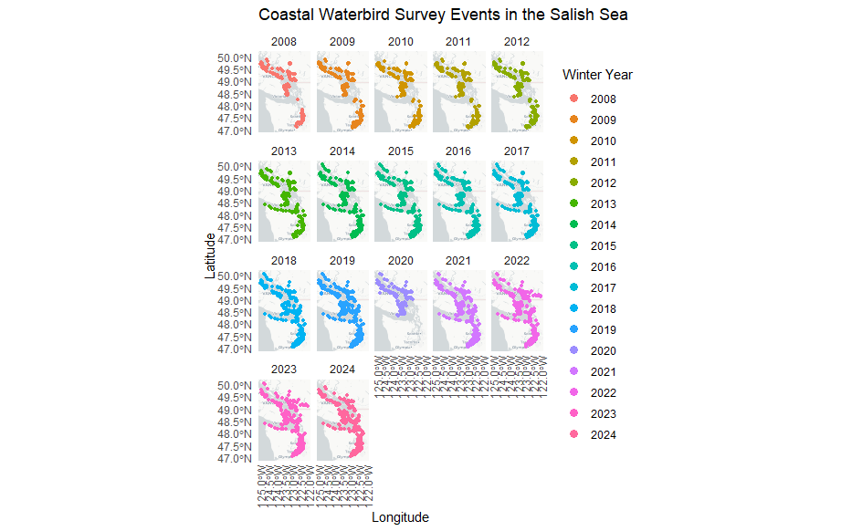

source("Scripts/00_Setup.R")3 Data Access and Cleaning
Before you get started, run the setup.R script to install and load the necessary packages and functions for this analysis.
3.1 British Columbia Coastal Waterbird Survey (BCCWS)
3.1.1 Protocol
BCCWS data collection protocol can be found online here.
In short, surveys have been conducted by volunteers using a standardized protocol and data collection sheets. Shore-based counts are completed monthly on or near the second Sunday of each month from September to April. Surveys are complete within approximately 2 hours of high tide to maximize the opportunity for close observation. All waterbirds observed to a distance of 1 km from the high tide line are counted, except those that fly through without stopping. In the case of larger flocks, numbers are estimated by counting individuals and species in groups and scaling up (see Training Module for Volunteers). Data are entered through a customized online data entry system available on the Birds Canada website, NatureCounts. Observations are processed using the eBird data filters to flag rare species and high counts during observer data entry, and records are manually reviewed for form accuracy.
The data are collected using a standardized protocol, by trained citizen-science volunteers. This standardization is a strength of this data set for making inferences about coastal waterbirds in the Canadian Salish Sea.
3.1.2 Data Collected
Observation counts of waterbirds and raptor seen during a survey are compiled at the scale of the route (i.e., the maximum count per species) on each monthly survey. These observations are divided into inland, near shore (shoreline to 500m out from high tide), off shore (beyond 500m), and total counts. The dataset is not zero-filled.
Auxiliary Data Collected:
Observer information: observer ID
Survey information: time observation started, time observation ended, duration in hours
Survey condition: precipitation, % cloud, sea condition, tide state, tide movement, visibility, survey equipment, human activity (all categorical)
3.1.3 Data Access
Data can be freely accessed through the NatureCounts data download portal or directly through the naturecounts R package. The BCCWS is Access Level 4 dataset, meaning a data request form must be submitted. This is not meant to be a barrier, rather a means of keeping track of who is using the data and for what purposes.
Data are formatted using a standardized schema that is a core standard of the Avian Knowledge Network and which feeds into GBIF. This format is called the Bird Monitoring Data Exchange (BMDE), which includes 169 core fields for capturing all metric and descriptors associated with bird observations.
#Sample code to access BCCWS data from NatureCounts
BCCWS_BMDE<-nc_data_dl(collection="BCCWS", username = "YOUR USERNAME", info="MY REASON", fields_set = "extended", request_id = 12345)
#Write raw data to the `Data` folder in working directory
write.csv(BCCWS_BMDE, "Data/BCCWS_BMDE.csv", row.names = FALSE)3.2 Puget Sound Seabird Survey (PSSS)
3.2.1 Protocol
PSSS data collection protocol can be found online here.
In short, surveys are conducted by volunteers using a standardized protocol and data collection sheets. Shore-based counts are completed monthly on the first Saturday of each month from October to April. Surveys are completed within approximately 2 hours of high tide to maximize the opportunity for close observation. Surveys are a minimum of 15 minutes and a maximum of 30 minutes per site. All waterbirds observed to a distance of 300 m from the high tide line are counted, except those that fly through without stopping. For large flocks, surveys estimate both the min, max, and best estimate. Surveyors are required to attend a short training session with Puget Sound Bird Observatory staff prior to their first survey. Data are entered through a customized online data entry system, available here.
The data are collected using a standardized protocol, by trained citizen-science volunteers. This standardization is a strength of this dataset for making inferences about coastal waterbirds in the US Salish Sea.
3.2.2 Data Collected
Total observation counts of each waterbird species seen during a point survey are recorded, including bearing, distance, and sex ratio. Raptors are recorded separately from the other waterbird species. The dataset is not zero-filled.
Auxiliary Data Collected:
Observer information: observer name
Survey information: time observation started, time observation ended
Survey condition: weather, precipitation, sea state, tide movement, visibility, human activity, raptor activity (all categorical)
3.2.3 Data Access
At the time of writing, the data were only accessible by reaching out to the Puget Sound Bird Observatory directly and filling out a data share agreement. The data will be sent to you as a .csv flat file which will be suitable for Data formatting and processing. Ensure that you receive all the data for the specified temporal period you are interested in analyzing. This will be needed to allow for proper zero-filling. Place the data in a Data folder in your working directory.
3.2.4 Data Format
The PSSS is in a different format than the BCCCW, and therefore requires a separate data processing step to wrangle the data into the 169 core fields of the Bird Monitoring Data Exchange (BMDE). The following function will do this step for you.
# Call the function passing the file path into the PSSS_BMDE function
PSSS_BMDE <- psss_to_bmde("Data/psss20250603.csv")3.3 Clean and Combine
Now it is time to do some data cleaning before we combine the BCCWS and PSSS datasets. The user has the opportunity here to select the start and end dates of the analysis by changing the Y1 and Y2 variables.
During this process some species are combined following advise from the survey coordinators. These are species that are typically difficult to tell apart and are often misidentified.
“Large Gull” = gull (large) + WEGU + GWGU hybrid + Glaucous-winger + Western + Herring + Glaucous + Iceland (Thayer’s) + California Gull
“Greater-Lesser Scaup” = scaup sp + Lesser + Greater Scaup
“Eared-Horned Grebe”
“Western-Clark’s Grebe”
“Canada-Cackling Goose”
Other non-target species are also removed i.e., any species detected less than 10 times over all years is considered rare and removed.
This part of the code also creates and events martix for each program. This is what is used for zero-filling during the species or guild specific analysis.
- wmonth = MonthCollected (1=September to 8=April)
- wyear
- ObservationCount3 for BCCWS to match PSSS protocol
- Sampling events matrix
#Manually specify the start and end year of the analysis
#Keep in mind that this is the winter year (wyear) which is the start year of the survey
#The survey straddles two calendar years
Y1 = 2008
Y2 = 2024
clean_BCCWS<-clean_BCCWS(Y1, Y2)
clean_PSSS<-clean_PSSS(Y1, Y2)Combine the clean datasets and events tables
#Access clean data
in.BCCWS <- clean_BCCWS$in.BCCWS
in.PSSS <- clean_PSSS$in.PSSS
#Access events data
event.BCCWS <- clean_BCCWS$event.BCCWS
event.PSSS <- clean_PSSS$event.PSSS
#Combine and write the data to you Data folder
in.data<-rbind(in.BCCWS, in.PSSS)
events<-rbind(event.BCCWS, event.PSSS)
# To write to local Data directory
write.csv(in.data, "Data/in.data.csv", row.names = FALSE)
write.csv(events, "Data/events.csv", row.names = FALSE)3.4 Species Filtering
Not all species will be included in an analysis. Some species are detected too infrequently to be included or they may not be species of focus for your study area. In the next section, you will be given the option to manually select focal species or guilds for the analysis.
Here we filter for species that are detected by both surveys. Generally, PSSS monitors just targets, whereas the BCCWS monitors more non-targets. In the analysis script we will set some additional minimum data requirements to remove species that do not have enough data to estimate trends.
#Determine which SpeciesCode each ProjectCode share in the full dataset
sp.bccws<-in.data %>% filter(ProjectCode == "BCCWS") %>% dplyr::select(CommonName) %>% distinct()
sp.psss<-in.data %>% filter(ProjectCode == "PSSS") %>% dplyr::select(CommonName) %>% distinct()
common.species<-intersect(sp.bccws$CommonName, sp.psss$CommonName)
#There were 53 species in common between BCCWS and PSSS that are carried forward for the analysis
#filter the full dataset to only include the common species
sp.data<-in.data[in.data$CommonName %in% common.species,]
#write to Data folder in working directory
write.csv(sp.data, "Data/sp.data.csv", row.names = FALSE)3.5 Guild Assignment
The user may be interested in assigning species to Guilds for their analysis. In the Data folder we provide the user with migration and dietary guilds for the 53 species that the survey programs have in common. We can also assign species to family using the NatureCounts metadata, which can be accessed using the R package.
The user may wish to review and update this .csv as needed, as new species might be added that are not currently on the list.
guild<-read.csv("Data/GuildList.csv")
guild<-guild[guild$english_name %in% common.species,]
family<-meta_species_taxonomy() %>% select(species_id, group_id, family_name, family_english_name)
guild<-left_join(guild, family, by=c("species_id"))
sp.data<-left_join(sp.data, guild, by=c("CommonName" = "english_name"))
#write to Data folder in working directory
write.csv(sp.data, "Data/sp.data.csv", row.names = FALSE)3.6 Sampling Events Plot
Now we will plot the distribution of sampling events over the extent of the Salish Sea. This will be facets by year (wyear) so that changes in sampling effort can be spatially visualized. Each survey program will be given a different colour.
Notice that in 2020, sampling was reduced in Canada and did not happen in the US due to COVID-19. We will therefore remove this wyear during the analysis.
#Convert the data to a spatial object
events_sf <- st_as_sf(events, coords = c("DecimalLongitude", "DecimalLatitude"), crs = 4326)
ggplot(data = events_sf) +
# Select a basemap
annotation_map_tile(type = "cartolight", zoom = NULL, progress = "none") +
# Plot the points, color-coded by survey_year
geom_sf(aes(color = as.factor(wyear)), size = 1) +
# Facet by survey_year to create the multi-paneled map
facet_wrap(~ wyear) +
# Add a theme with a minimal design and change the font styles, to your preference
theme_minimal() +
#theme(legend.position = "bottom") +
# To make the points in the legend larger without affecting map points
guides(color = guide_legend(override.aes = list(size = 3))) +
#make the text on the x-axis vertical
theme(axis.text.x = element_text(angle = 90, vjust = 0.5, hjust=1)) +
# Define the title and axis names
labs(title = "Coastal Waterbird Survey Events in the Salish Sea",
x = "Longitude",
y = "Latitude")+
#Define the legend title
scale_color_discrete(name = "Winter Year")